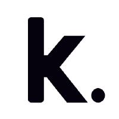

📸
Habito
Image detection-based habit tracking app with AI verification using vector embeddings and PostGIS for location-based leaderboards.
I am a software developer with strong expertise in Python and FastAPI. Actively exploring innovative technologies like blockchain, distributed systems, IoT, and AI, with hands-on experience applying them to practical solutions.
Image detection-based habit tracking app with AI verification using vector embeddings and PostGIS for location-based leaderboards.
WhatsApp chatbot for appointment booking with automated scheduling, webhook integration, and a Django admin panel for a local car wash.

Synthlane
Noida

Kubik Labs
Gurugram
Droidsize Technologies
Remote
B.Tech, IT
Indian Institute of Information Technology, Una
Senior Secondary (XII)
ISC Board, St. Jude's School, Dehradun
Secondary (X)
ICSE Board, St. Jude's School, Dehradun
Ranked 5th out of 65 teams in FrostHack 2023, annual hackathon conducted by IIT Mandi.
First Runner Up in Pro-go-thon 2022, annual hackathon conducted by IIIT Una.
Open-source exposure through contributions to MetaCall and 3× Hacktoberfest participation.
Active on competitive programming platforms — LeetCode, GeeksforGeeks, CodeChef.
I specialize in backend development with Python and FastAPI, building high-performance, scalable APIs. I also have experience with Django, blockchain data pipelines, AI integrations, and distributed system architecture.
My core stack includes Python, FastAPI, PostgreSQL, Docker, and AWS. I also work with Redis, MongoDB, DuckDB, Airflow, Kubernetes, and have hands-on experience with IoT devices like Raspberry Pi and Arduino.
Absolutely! I'm always open to exciting projects, collaborations, and open-source contributions. Feel free to reach out via email or LinkedIn, and let's discuss how we can work together.
I start with understanding requirements and constraints, then design with scalability, maintainability, and performance in mind. I leverage proven patterns — RESTful architecture, event-driven pipelines, caching layers, and load testing — to ensure the system performs reliably under real-world conditions.
For performance testing I use JMeter and k6. For monitoring and observability, I work with Grafana and Prometheus. I also use Postman and pytest extensively for API testing and achieving strong code coverage.
Have a project in mind or want to explore a collaboration? I'd love to hear from you. Reach out and let's build something great together.